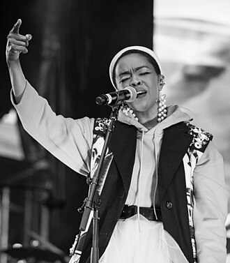

Lauryn Hill
Lauryn Noelle Hill is an American rapper, singer, and songwriter. She is considered one of the most influential musicians of her time. A definitive figure in neo soul and a pioneer of rap-singing and melodic rap, The Telegraph credited Hill with the popularization of hip-hop. NPR named her one of the 50 Great Voices and stated that her "voice is the story of the hip-hop generation". She was the only woman named on the lists of "Greatest MCs of All Time" (2006) by MTV and 10 Greatest Rappers by Billboard, and appeared on Rolling Stone's 200 Greatest Singers and VH1's 100 Women in Music.
Complete Discography & Tracklists (2)